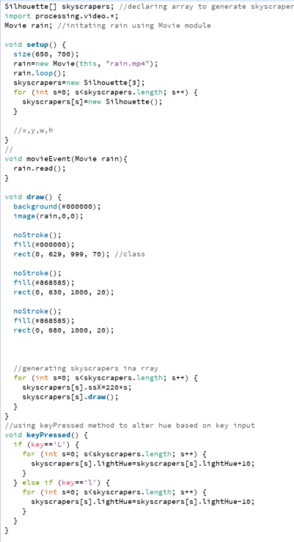
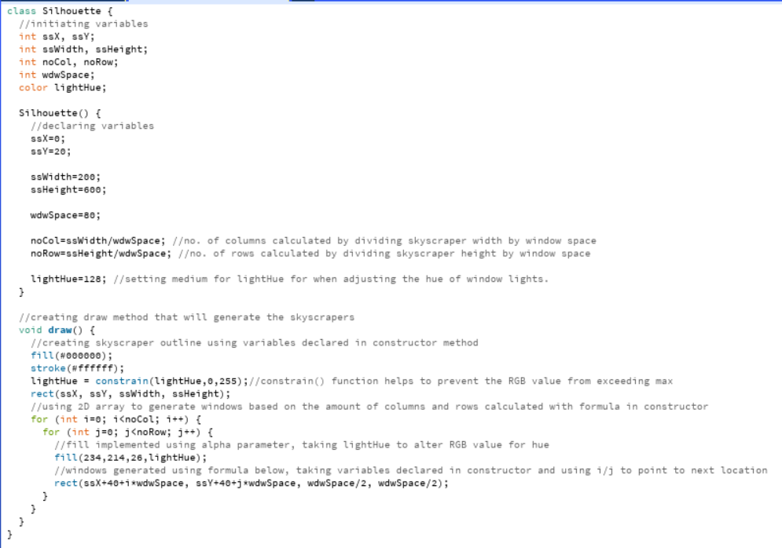
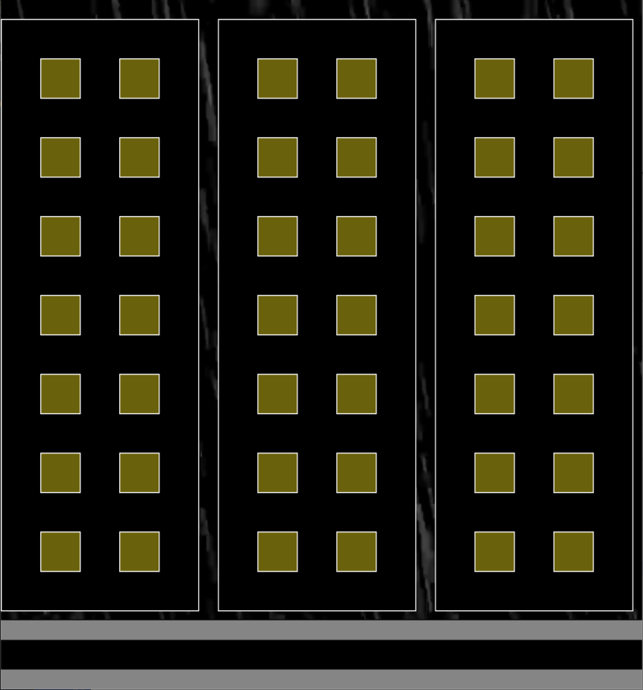

Robert PaulsPrior to Undergraduate, I'd studied Computer Science at both GCSE and A Level having programmed using Python and SQL(mostly at A Level)which I am . While learning Java has been a short-packed, process, I've thoroughly enjoyed being able to learn its abilities through Processing. Throughout the GCSE and A Level courses, I've used Python to learn a lot of programming concepts including OOP, Loops, Arrays and a lot of what we've been learning throughout the bootcamp. I've also been able to create my own projects towards the end, both on a large and small scale. The previous knowledge has given me a good understanding of the use for certain concepts however the difference in syntax has been a short struggle for me. As well as creating my own program in both courses, I've also attempted my own small programs either using predefined Git Repo's such as red discord bot or by attempting to code my own programs using YouTube tutorials. |
||
|
|
||
Java Bootcamp Project: Interactive SkyscrapersThe video on the right helps demonstrate the function of the program visually Using the previous 2 weeks of Java taught to us, I've been able to develop a program that is able to generate skyscrapers with windows that allows the user to change the hue of light on windows' of the skyscraper based on the keyPressed() method. Originally, I had intended to develop each skyscraper and its windows separately in the main draw() method however using a class would be much more efficient, that combines the program's methods and it's attributes into one class to be called under the main program's draw() method with the .draw() function. As well as being able to combine methods and attributes in one, I am able to alter the behaviour of the class using it's objects (variables initiated and declared in the class) instead of the need to create each part of the draw() method separately in the main program. Within the class, I have created a 2D array which will help to generate the windows of each skyscraper After creating the skyscrapers and their windows in the class draw() method, I used the keyPressed() method to be able to alter the hue of the windows. By setting the lightHue variable previously in the class, I can access it in the fill() function as the alpha parameter to be used with the allocated keys as a hue controller, altering the value of the hue until it reaches a black background or the max value of lightHue. To prevent the hue from going over the max RGB values, I used the constrain() function to prevent the value of lightHue from exceeding either the lowest or highest RGB value when adjusting.
Check out the code on Github: Bootcamp Project Repo | A video describing the program's functionality and the final result | |
|    | ||